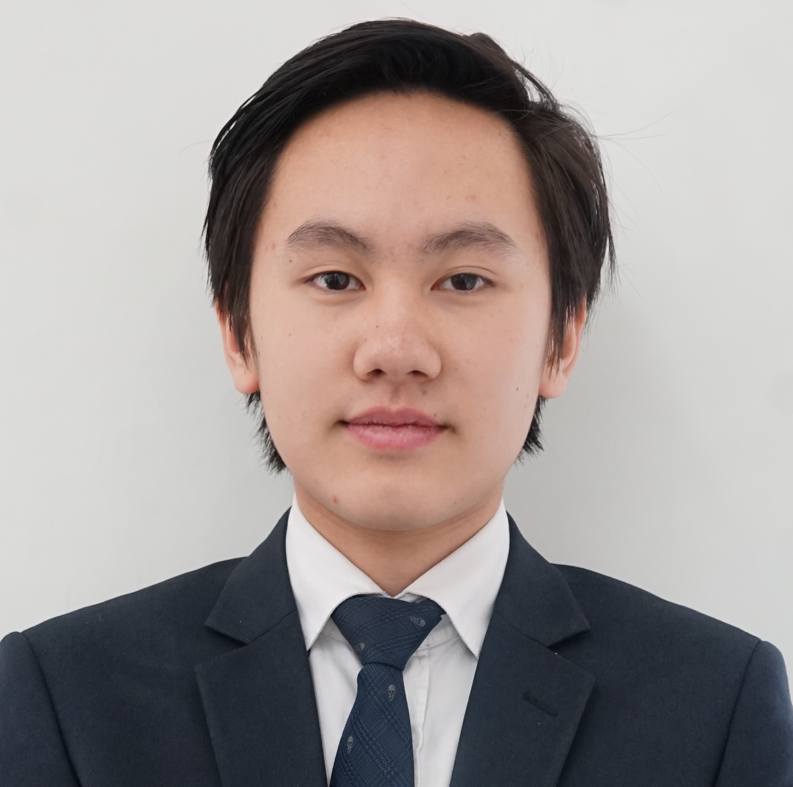

Meet Our Student Executive Officer Team
The DIMUN conference is organised and run by an organising team made entirely of students, with the support of Dulwich College Beijing and MUN Directors. Leading this team and DIMUN IX are the Executive Student Officers below:
Secretary-General

Secretary-General

Secretary-General Emeritus:
Deputy Secretary-General

Conference Manager
Head of Admin
Head Of Press
Head of Tech
Deputy-Head of Admin
Deputy-Head Of Press
Deputy-Head of Tech
Jackel Cheung: Secretary-General Emeritus
-
Esteemed directors, honourable chairs and respected delegates,
Welcome to DIMUN IX! It is with great honour that I will be serving this conference as your Secretary-General Emeritus. Whether you are a seasoned diplomat or completely new to MUN, this conference will provide a completely new experience for everyone – DIMUN conferences are more than just a place for intellectual sparring, they are gatherings where students forge bonds with one another and create treasured memories that stay with them throughout their MUN career.
Since I entered the MUN community four years ago, I have been to numerous conferences as an admin, a delegate, a chair and as a Secretary-General. These powerful experiences have helped me foster a growing appreciation for this subject and I hope that DIMUN will positively impact you in many ways. Indeed, I am confident that this year’s team will give you ample opportunity to make the most of DIMUN IX.
Jennifer Zhou: Secretary-General
-
Esteemed directors, honourable chairs and respected delegates,
Welcome to DIMUN IX! I am delighted to serve this conference as your Secretary-General. From debating resolutions as a delegate, to running committees as a chair, and finally to overseeing DIMUN as a member of the core team, I have treasured every moment of my MUN journey. DIMUN is a place for passionate young delegates to hone their skills of diplomacy, debate issues of global relevance, and form long-lasting bonds with their peers from around the world. I hope we can work together this year to create an enjoyable and productive conference.
Kevin Yao: Secretary-General
-
Honourable Directors, Delegates and Chairs.
My name is Kevin Yao and It is my greatest honour to serve you as the Secretary-General of DIMUN IX. DIMUN is a wonderful event that grows each year and we are exciting to welcome our new school delegations, as well as returning faces, to this great community of thinkers, leaders and debaters. For the delegates, I hope you take this conference as a chance to grow and develop. Every idea that you give will be on more step on your MUN journey. Perhaps this is your first conference, perhaps it is not. Nevertheless, I hope you take this opportunity and use it to the fullest extent.
This said, I look forward to seeing fruitful debate, diplomatic resolutions and passionate discussion. Welcome to DIMUN IX!
Yi Xin Lee: Deputy Secretary-General
-
Honorable student officers, fellow delegates, and most esteemed guests,
Welcome to DIMUN IX!
My name is Yi Xin Lee and I am incredibly honoured to be serving as your Deputy Secretary General for DIMUN IX. For the last three years or so, I have been an active part of the MUN community, from debating resolutions as a delegate, to running committees as a chair and now, overseeing DIMUN as a member of the core team. When I first started doing MUN in Year 9, I was in the Environment Commission and, like most new delegates, was terrified. Nevertheless, after doing multiple MUNs throughout the years, I have developed an incredibly drive for MUN — to any new delegates reading this, I hope to pass on this passion to you too! Hence, I strongly urge everyone to actively participate so that we can all work together to create an enjoyable and fruitful conference.
Daniel Cai: Conference Manager
-
Honorable directors and esteemed delegates,
My name is Daniel Cai and it is my upmost pleasure to serve as your Conference Manager for DIMUN IX. Whether it is the upbeat and thrilling debating or the idea that flashed in your mind urging you to try something new that brings you to DIMUN, you can rest assured that we are here to bring you the best MUN conference you have yet experienced. DIMUN is not only a place where the smartest minds coincide, where delegates find the joy in competition and collaboration, where unforgettable friendships are made, but also a place where it marks our steps as a generation, where we witness change and progress and where we celebrate passion and enthusiasm for debate.
I wish you the best of luck and look forward to meeting you soon!
Miksa Jordan: Head of Admin
-
Honorable Directors, distinguished delegates, esteemed chairs, and welcomed guests:
It is an honour to be serving as your Head of Admin for this year’s DIMUN IX conference. DIMUN is a place where great minds connect, great ideas flourish, and great memories are made. More importantly, DIMUN is a place where delegates learn more about what it means to be a citizen of the world.
Alongside my deputy, Andrew Luk, and the rest of the Admin Team, I will do everything I can to ensure that the conference runs as smoothly as possible. We hope to see you soon!
Seojin Heo: Head of Press
-
Esteemed directors, chairs and respected delegates,
It is an honour to be the Head of Press for this year’s DIMUN IX conference. DIMUN is a place to meet new people, learn and discuss about a wide variety of global issues.
The Press Team will be producing three issues of DIMUNITE, an annual DIMUN magazine. This will include interviews, articles and some exciting activities. I will try my best together with the deputy Head of Press , Adelle Yan, and members of the executive team to provide a worthwhile DIMUN experience.
Mark Li: Head of Tech
-
Honorable Directors, distinguished delegates, esteemed chairs, and welcomed guests,
It is my honor to serve you as the Head of Tech for DIMUN IX. DIMUN is a one of a kind as an event where young delegates have the opportunity to set their minds together and create so much more. Here, you are able to empower others with your enthusiasm, resourcefulness and passion.
My deputy Jinho and I along with many more will maintain the DIMUN website and create a smooth experience during the conference to ensure your experience is as pleasant as possible. We look forward to meeting you soon.
Andrew Luk: Deputy-Head of Admin
-
Esteemed directors, honourable chairs and respected delegates,
I am Andrew Luk and it is my absolute pleasure to serve as the Deputy Head of Admin for DIMUN IX. The admin team will be responsible for assisting delegates in a myriad of ways. Ensuring that the conference runs smoothly is another responsibility which will be upheld by our team of admin staff who will be more than happy to guide delegates. I wish the delegates the best of luck and I look forward to another year of diplomacy and constructive debating.
Adelle Yan: Deputy-Head of Press
-
Honourable delegates, directors and chairs, welcome to DIMUN IX!
My name is Adelle Yan and it is my pleasure to serve as your Deputy Head of Press this year. The Press Team is in charge of media and overall coverage for the conference; we will be producing a variety of articles, photographs, videos, many which will be published within our DIMUNITE issues, for delegates and directors to enjoy. I wish the delegates the best of luck, and look forward a fruitful conference!
JinHo Hong: Deputy-Head of Tech
-
Esteemed directors, honourable chairs and respected delegates,
It is my greatest pleasure to serve as your Deputy-Head of Tech this year. The Tech Team is in charge of ensuring that your experience with any form of technology during the conference goes smoothly. Our team consists of many talented individuals that are more than capable to assist you when you are in need of assistance. We will try to make this conference as seamless as we can make it!
I wish the delegates the best of luck, and look forward to assisting you throughout the conference!
Student Officers
General Assembly First Committee [GA 1]
Ji (Hannah) Nan
Evan Lu
General Assembly Second Committee [GA 2]
Daniel Cai
Ivy Kang
Economic and Social Council [ECOSOC]
Yi Xin Lee
Jung Woo Hong
Environment Commission [ENV]
May Lee
Ah Song Cho
Human Rights Council [HRC]
Kelsey Fu
Karl Stuecker
Special Conference on Southeast and Central Asia [SPC]
Yichu Huang
Chaewon Park
Disarmament Council [DIS]
Aalia Labrador
Shawn Teh
Security Council [SC]
Haerin Kim
Eric Choi
Jonathan Ng
Advisory Panel [AP]
Julie Zhang
Michelle Zhang
Delegates
| Delegate Preparation Guide | How to write a resolution |
Delegates:
Delegates must be in Years 7 – 9 (Grades 6 – 8), and no previous MUN experience is necessary. However, high-school students who wish to join DIMUN VIII are welcome to join the Advisory Panel; a new committee that has been opened specially for interested high-school students. At the conference, each committee will have one delegate per country.
Prior to the conference, delegates are required to research their assigned countries in order to represent them effectively in debate. They must also research their individual topics and prepare draft resolutions to be merged during lobbying. Delegates are also expected to be familiar with debate procedures, although committee Chairs will assist all delegates. Our Delegate Guide is available here and contains preparation and research guidelines, a sample resolution, the official DIMUN debate procedures and other relevant information.
Conference Theme
Beyond Borders
Statement Of Purpose
Dulwich International Model United Nations was founded by Miranda Melcher and Benjamin Tan in 2010. Though we did not have the privilege of witnessing them build DIMUN from scratch, their initial resolve and ardour continues to inspire us today. The annual DIMUN conference serves to provide curious middle school students with the opportunity to discover and experience MUN from a young age.
The rigid procedures and crowded committee rooms of MUN are not as apparent at DIMUN conferences; It’s a reminder of the basics of diplomacy: the simplest form of dialogue in order to achieve unanimity. DIMUN Delegates needn’t be seasoned, polished MUN debaters. We look for delegates who are not restricted by pre-conditioned approaches to global issues but have their original perspective, original perspectives that will become the foundation of tomorrow’s world. There will be no restraints at DIMUN: no judgement, no censorship, just opportunity.
DIMUN was created by Students, led by students and will continue to be led by students for many years to come. Our philosophy was shaped by the belief that each ‘generation’ of MUNers will inspire the next and advise them with their experience. The paths we pave now will make it easier for the next to discover their own.
Every Secretary-General, before and after me, pledge to guide, lead and stand to serve each participant of DIMUN, and I have faith that the legacy of DIMUN will continue to unreservedly serve the global community.
Jackel Cheung
Secretary-General DIMUN VIII, March 2017-2018
MUN/Debating Prefect 2017-2018
Dulwich College Beijing Class of 2019
Message From Founder
Honourable Directors, Distinguished Chairs, and most of all Esteemed Delegates,
The Dulwich International Model United Nations (DIMUN) conference was created to bring MUN to students often considered too young to fully understand, appreciate, and participate in the complexities of politics, debates, and problem-solving. When we came up with the idea for DIMUN, at around sixteen years old, we had already attended several Model UN conferences around the Asia Pacific and knew that this perception was completely wrong.
DIMUN was therefore founded to provide opportunities for Key Stage 3 (middle school) to experience Model UN in an academically rigorous but supportive environment, with the guidance that new delegates and directors deserve. At the heart of the DIMUN experience is the belief that MUN should be by and for students, and that with open minds, curiosity, and creativity, students are willing and able to rise to every challenge.
Miranda Melcher
Founder of DIMUN
Secretary-General DIMUN I, February 2011
President of Model United Nations at Dulwich College Beijing, 2009-2012
Dulwich College Beijing Class of 2012
Benjamin Tan
Secretary-General DIMUN II, February 2012
President of Model United Nations at Dulwich College Beijing, 2012-2013
Dulwich College Beijing Class of 2013, Head Boy
Alumnus
| YEAR | SECRETARY-GENERAL | |
|---|---|---|
| DIMUN I | Miranda Melcher, | Yale Graduate, King’s College PhD Candidate |
| DIMUN II | Benjamin Tan, | Oxford Undergraduate |
| DIMUN III | Richard Zhuang, | Imperial College London Masters Candidate |
| DIMUN III | Kyoka Kosugi, | Brown Undergraduate |
| DIMUN IV | JinJu Choi, | SNU Undergraduate |
| DIMUN V | Matthew Xie, | Carnegie Mellon Undergraduate |
| DIMUN V | Julie Kim, | KUBS Undergraduate |
| DIMUN VI | Silvia Shen, | Oxford Undergraduate |
| DIMUN VI | Johanna Shen, | Yale Undergraduate |
| DIMUN VII | Yi Wen Lee | |
| DIMUN VII | Haerin Kim | |
| DIMUN VIII | Jackel Cheung | |
| DIMUN VIII | Sunho Kwon | |